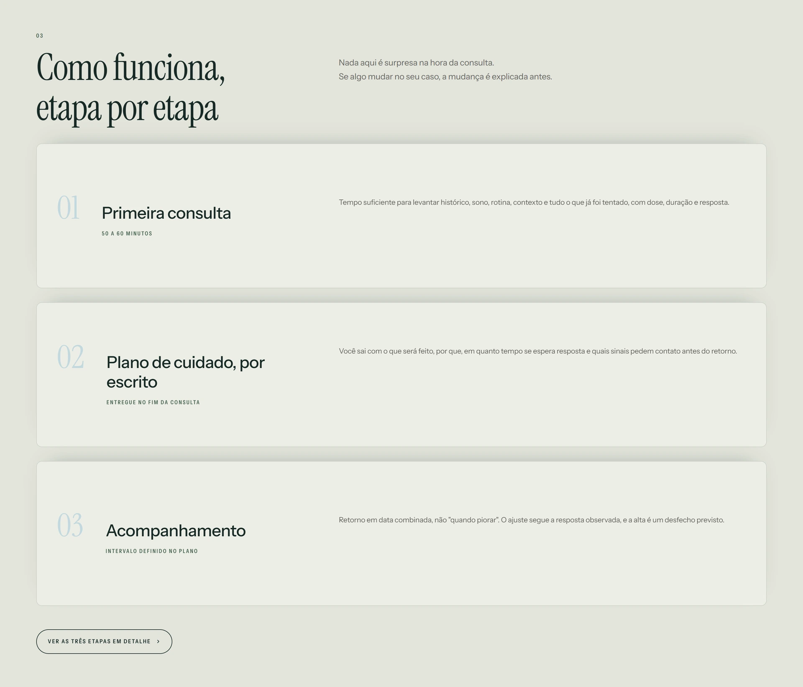

Índice permanente
A numeração e os rótulos de seção deixam o percurso legível. A pessoa consegue entender onde está antes de decidir continuar.
Design & desenvolvimento
UI / UX
Nem tudo que aperta o peito tem nome ainda.
 Ampliar
Ampliar A versão atual apresenta o Dr. Paulo Rogério Seraphim Júnior como médico em saúde mental para adultos em Londrina. A entrada parte de sintomas e situações reconhecíveis antes de falar de formação, método e atendimento.
O site organiza a experiência como uma sequência numerada: início, motivos de procura, sobre o médico, atendimento, leituras e contato. A navegação funciona como um índice permanente do percurso.
A numeração e os rótulos de seção deixam o percurso legível. A pessoa consegue entender onde está antes de decidir continuar.
A seção transforma sintomas e situações em pontos de entrada. O conteúdo ajuda a reconhecer uma demanda sem forçar um diagnóstico pela interface.
Primeira consulta, plano por escrito e acompanhamento aparecem como etapas. O atendimento é descrito antes do agendamento.

AmpliarA versão publicada observada usa uma página longa com navegação por seções e pontos de contato diretos. O conteúdo alterna blocos editoriais, cards numerados e etapas de atendimento.
A interface prioriza tipografia, espaçamento e sequência de leitura. Motivos de procura, formação, método, leituras e contato têm papéis distintos, evitando que a primeira tela carregue todas as decisões.
A captura foi feita no endereço correto informado por Iago: drpaulo-eight.vercel.app. O caso descreve a interface observada e não transforma informações médicas, depoimentos ou afirmações do site em resultados comprovados do portfólio.
Visitar o site